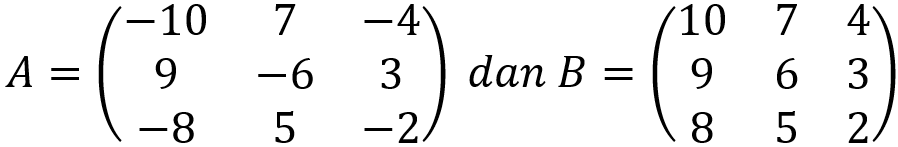
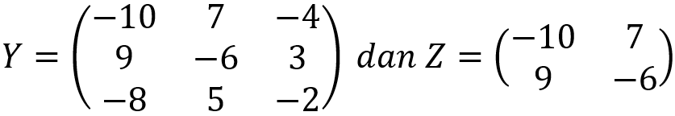

KESAMAAN MATRIKS
Gimana kalo salah satu syaratnya gak terpenuhi? Berarti kedua matriks tidak sama. Ini ada dua contoh dari matriks yang gak sama. Kita mulai dari contoh pertama yaa.

Alasan matriks di atas gak sama adalah karna elemennya gak sama. Coba kita buktikan dengan lihat elemen a11 dan elemen b11. Elemen a11 punya angka -10, tapi elemen b11 punya angka 10. Beda 'kan? Makanya matriks A dan matriks B yang ini tidak sama. Next, kita ke contoh kedua.

Kenapa matriks Y dan matriks Z dibilang gak sama? Jawabannya singkat, padat, dan jelas, yaitu karena ordo matriks Y dan matriks Z beda. Ordo matriks Y adalah 3×3, tapi ordo matriks Z adalah 2×2. Makanya matriks Y dan matriks Z tidak sama.